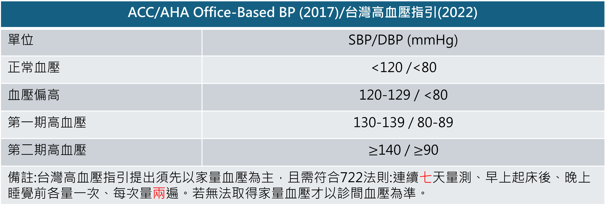
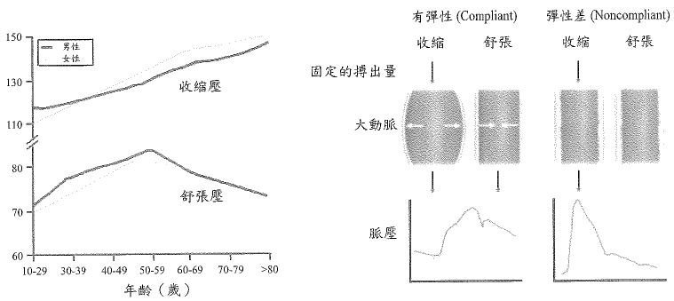

|
|
|||
|
|
✅模板試作(HTN) |
* |
|
|
|
2025年2月4日
下午 11:14


來自 < https://www.who.int/news-room/fact-sheets/detail/hypertension>
治療[口訣：ABCD]
|
減重 |
目標 BMI < 25 kg/m2 |
|
飲食限鹽 |
每天< 6g NaCl |
|
以DASH-type*訂定飲食計畫 |
多蔬果、低脂乳製品、減少飽和脂肪或脂肪攝取 |
|
適量酒精攝取 |
建議有飲酒習慣的病患，男性每天2杯，女性每天1杯酒 |
|
運動 |
規律有氧運動，如每天快走30分鐘 |
|
ACEI |
Captopril (Capoten®), Lisinopril (Zestril®) |
高血壓 |
|
ARB |
Losartan (Cozaar®), Valsartan (Diovan®), Telmisatan (Micardis®) |
慢性腎病變 |
|
分類 |
ISA(-) [記：A.P開頭的藥中，不常見的是ISA(+)] |
ISA(+) |
|
β1 blocker[字首為 A〜M]=cardioselective |
Atenolol 、Bisoprolol、Metoprolol |
Acebutolol |
|
Nonselective β blocker[字首為 N 之後] |
Propranolol (Inderol)、Nadolol、Timolol |
Pindolol |
|
α1 blocker + Nonselective β blocker |
Carvedilol、Labetalol |
|
|
|
|
Indication |
S/E |
|
1 代 DHP (Short-acting) |
Nifedipine (Adalat)、nimodipine(SAH) 時間短效，作用較強烈，容易引起反射性心跳過速 |
高血壓 心絞痛 Raynaud phenomenon |
頭痛 周圍水腫 Flushing Reflex tachycardia 牙齦增生 |
|
2 代 DHP (Intermediate-acting) |
Nicardipine(Perdipine)(HTN emergency) 、Felodipine (Plendil) 改善了作用持續時間短的問題，部分劑型改為長效 |
同上 |
同上 |
|
3 代 DHP (Long-acting) |
Amilodipine (Norvasc)、Lacidipine (Lasyn) 長效制劑，起效緩和，副作用更少 |
同上 |
同上 |
|
Non DHP |
Diltiazem (Herbesser、Cardizem) 、Verapamil (Isoptin)(Migraine) |
心室上心搏過速 HoCM |
心肌收縮、HR↓ AV block 牙齦增生 Verapamil |
|
特性 |
DHP |
Non-DHP (Verapamil, Diltiazem) |
|
作用位置 |
血管平滑肌 |
心肌與傳導系統 |
|
主要作用 |
血管擴張、降血壓 |
減慢心率、降低心肌收縮力 |
|
副作用 |
頭痛、潮紅、水腫 |
心跳過慢、房室傳導阻滯、便秘 不可用於systolic HF(HFrEF) |
|
臨床應用 |
高血壓、冠心病(stable、variant angina) |
心律不整、心絞痛(減少心肌耗氧需求) |
副作用：腳踝水腫、臉部潮紅、頭痛、便秘
|
學名 |
Nitroprusside |
Nitroglycerin |
|
商品名(劑量) |
Nipride (50 mg = 2 ml = 1 amp) |
0.1% Isoket (10 mg = 10 ml = 1 amp) |
|
藥理作用 |
同時擴張動、靜脈，降壓速度極快 |
一般劑量：擴張靜脈及冠狀動脈，用於心肌梗塞減少preload及增加冠狀動脈血流 高劑量：可同時擴張動脈，降低afterload |
|
副作用 |
|
會增加腦部血流，增加顱內壓，造成頭痛， 不可用於腦壓高的病患 |
|
適應症 |
用於心衰竭病患以提高心輸出量；用於labetalol控制不佳的高血壓併發主動脈剝離 |
較常用於心絞痛或心肌梗塞時(右心室心肌梗塞不可使用)，降低preload ；偶爾可用較高的劑量來降血壓 |
|
注意事項 |
降壓效果極快，建議在加護病房內有Arterial line可隨時掌握血型動力學時使用； 急診或病房病患建議先用其他藥物 |
使用一般塑膠(PVC) set會使藥物吸附於管壁上，起始劑量可能須提高數倍(2〜5X)， 建議使用特殊set (橘色)及以特殊材質(PP) 塗於內層的生理食鹽水瓶泡製 |
|
|
狀況 |
目標血壓 |
|
一般患者 |
IV 藥物(Nitroprusside、Labetalol) 將血壓於幾分鐘到2小時內降低 |
160/100 以下 |
|
保守降壓 |
缺血性中風病患 缺血性中風若欲給予血栓溶解劑出血性中風病患 出血性中風病患 |
僅在220/130以上才需降壓 降至185/110以下 降至180/130以下 |
|
積極降壓 |
SAH建議將MAP Aortic dissection 建議將 SBP |
降至130以下 降至120以下 |
使用 OneNote 建立。